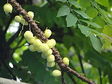

ASTHMA
CERME(arainellikai in Tamil)

- cerme leaves are efficacious for nausea and nausea medicine, roots for asthma and young leaves for thrush. Its anti-inflammatory, anti-inflammatory, prevents vomiting.
- ToDo:Some dry roots (1 g) finely ground, pour hot water, drink carefully because the roots are a bit toxic.
- Asthma, bronchitis Soak the zucchini in salted water, dry it and fry it to cure asthma and colds.
- Asthma, rabies coast Asthma, Rheumatoid Arthritis Coastal Grass Gray 3 Rice weight can be eaten with honey.
- Asthma, bronchitis Soak the zucchini in salted water, dry it and fry it to cure asthma and colds.
- Asthma, rabies coast Asthma, Rheumatoid Arthritis Coastal Grass Gray 3 Rice weight can be eaten with honey.